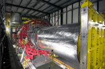

Physics >
HEP >
LHC
The Large Hadron Collider (LHC)

High Energy Physics at the LHC
I am currently interested in the Compact Muon Solenoid (CMS) Collaboration at CERN to gain a mastery of meson spectroscopy and a better understanding of Quantum Chromodynamics (QCD) and it's limitations. Specifically, I am interested in charmonium spectroscopy (the new meson states) and other new physics possible at energies >1 TeV. CMS is scheduled to start taking data in a year or so...
Useful Sites:
CMS Info
Recent Talks:
Black Holes at the LHC - if there are "large" extra dimensions beyond our 4-dimensional spacetime, then these have the possiblity of changing the Planck mass, the scale at which gravity is of the same strength as the electroweak force. If the Planck mass is of the order 1 TeV, then the LHC will be a copious Black Hole producer. (given 20 October 2004 to the UT Particle Physics Seminar).
Return to the top.